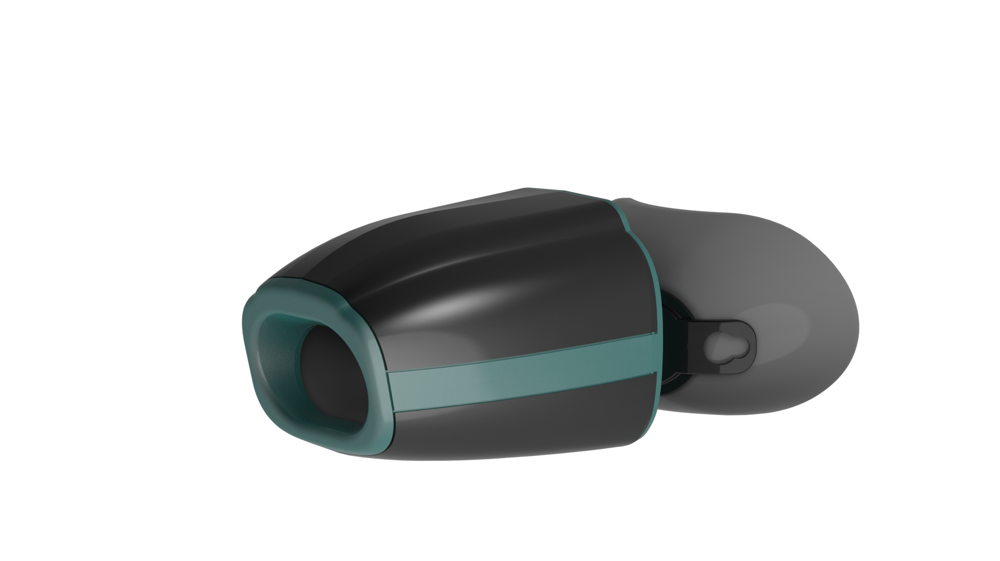
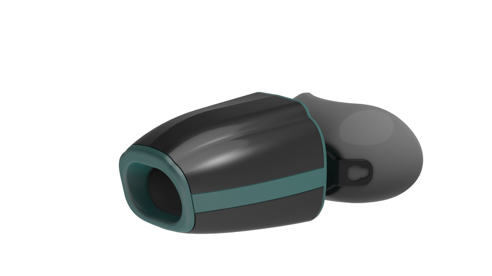

Know your VO2 max.
Anywhere.
AeroCardia is a lightweight sensor you breathe through. It reads your oxygen uptake, ventilation and effort in real time — on the road, on the trail, on the bike. The lab test that predicts endurance and longevity, now in every session.
For general wellness and fitness use. AeroCardia is not a medical device.

Backed by
 McGill Dobson Centre for Entrepreneurship
McGill Dobson Centre for Entrepreneurship
 Garage&Co
Garage&Co
 Vitruvius Venture Studio
Vitruvius Venture Studio
 Marika Zelenka Roy Innovation Prize
Marika Zelenka Roy Innovation Prize
Real-time guidance for every run and ride.
Heart rate tells you how hard your heart is working. AeroCardia tells you what your whole system is doing — how much oxygen you are actually using, and how close you are to your ceiling.
Live VO2 & ventilation
Watch oxygen uptake and breathing respond to every hill and interval — streamed to your watch or head unit.
True effort zones
Zones anchored to your ventilatory thresholds, not a guess from max heart rate. Know when you are truly easy, and when you are past tempo.
Longevity signal
VO2 max is one of the strongest predictors of healthspan. Track yours over months and see the trend that matters most.

On in seconds. Breathe like you always do.
A soft cup seals over your nose and mouth, a light strap holds it, and the sensor pod does the rest. No mouthpiece to bite, no calibration ritual, no cart of gas analysers.
- Pairs over Bluetooth & ANT+ with Garmin, Wahoo, Apple Watch and Zwift
- Sweat- and weather-resistant for outdoor training
- Multi-session battery — charge it like your other pods
- Double-tap the pod for an instant status check, no phone needed
Personalised run & ride training. Powered by the best data.
When your zones come from real gas-exchange data, every workout lands where it should. AeroCardia turns each session into feedback: was that aerobic, or did you drift? Are you ready to build, or still recovering?
Train in phases. Peak when it matters.
Raising VO2 max is not about going hard every day. It is about building an aerobic base, testing where you are, then sharpening for the event that counts.
- Foundation — easy-paced volume that grows your aerobic engine. AeroCardia keeps you genuinely easy.
- Test — a structured ramp gives you a real VO2 max number and fresh threshold paces.
- Peak — short intervals near VO2 max, spaced for recovery, so you sharpen without digging a hole.
Sport your team's colours.
Express your country with pride. Match your sensor to your national colours for the UCI Road World Championships — or your club, your flag, your race day.
Netherlands · Copper colourway. Great Britain, France and more editions confirmed closer to the race.

Reading on oxygen, endurance & healthspan.

Peak Performance and Longevity: The Tour de France Guide to VO2 Max
What three weeks of racing at the limit of human endurance teaches the rest of us about pacing, ceilings and recovery.
Read →The Ultimate Guide to VO2 Max: Measurement, Normative Data & Optimization
How VO2 max is measured, what a good score looks like by age and sex, and the training that actually moves it.
Read →What Is VO2 Max, and Why Does It Matter?
The gold-standard measure of cardiorespiratory fitness — and a powerful predictor of how long and how well you live.
Read →Be first to train with your own numbers.
AeroCardia is coming to runners, cyclists and longevity athletes. Join the waitlist for early access, launch pricing and updates from the team.